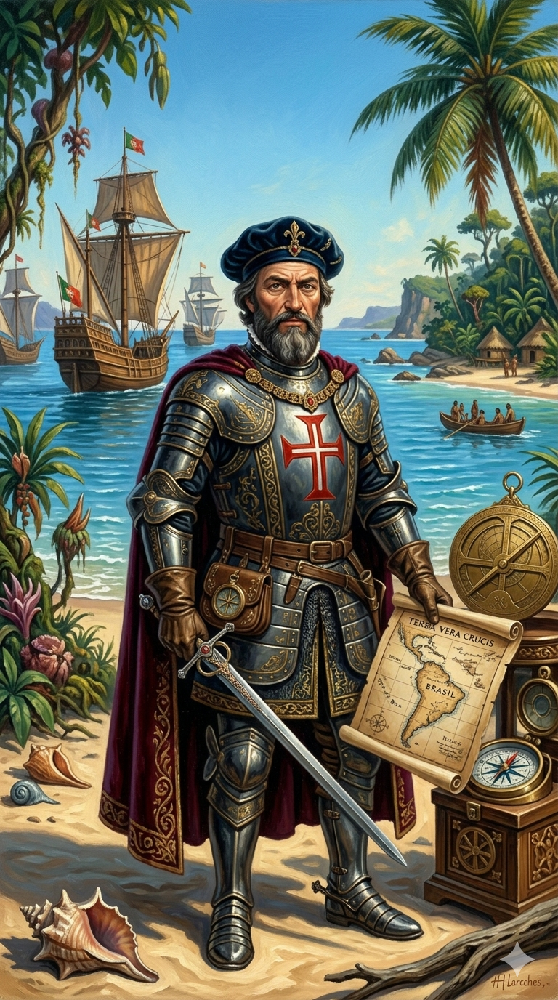

פדרו אלברס קבראל

לחץ על התמונה להגדלה
מקור ומשמעות השם המלא (אטימולוגיה)
שם פרטי: פדרו (Pedro)
השם "פדרו" הוא הגרסה הפורטוגזית/ספרדית לשם היווני והלטיני "פטרוס" (Petrus).
פירוש מילולי: מקור המילה ביוונית עתיקה "פֶּטְרוֹס" (Πέτρος), שמשמעותה אבן או סלע. השם קיבל משמעות דתית עמוקה בנצרות בעקבות שמעון פטרוס (השליח), שהוכתר על ידי ישו כ"סלע עליו אבנה את כנסייתי". השם משדר יציבות, כוח ואמונה איתנה.
שם אב/משפחה אמצעי: אלברס (Álvares)
"אלברס" הוא שם פטרונימי (המעיד על שם האב), סיומת נפוצה מאוד בחצי האי האיברי.
פירוש: הסיומת "es" (בפורטוגזית) משמעותה "הבן של". השם אומר בפשטות: "בנו של אלברו" (Álvaro). השם אלברו עצמו הוא ממוצא ויזיגותי/גרמאני ומשמעותו "שומר כל" או "לוחם פיות" (Elf warrior).
שם משפחה: קבראל (Cabral)
שם המשפחה הקלאסי של אצולתו הוא שם טופונימי (מתייחס למקום או מאפיין גיאוגרפי).
פירוש וסמל: השם נגזר מהמילה הלטינית "Capra", שפירושה עז, ו"Cabral" משמעותו מקום מרעה לעיזים או עדר עיזים. משפחת קבראל הייתה משפחת אצולה ותיקה, וסמל האצולה (שלט האצילים) שלהם, שניתן להם לטענתם עוד בימי מלך פורטוגל הראשון, הציג בגאווה שתי עיזים סגולות.
ילדות, אצולת החצר ומסדר ישו
פדרו אלברס קבראל נולד בסביבות 1467 במחוז ביירה באזור הררי בפורטוגל. הוא לא נולד ימאי אלא אריסטוקרט טהור (Fidalgo). הוא היה בנו השני של פשטאו קבראל, אציל בחצרו של המלך אפונסו החמישי.
בגיל 12 בלבד, קבראל נשלח לליסבון לחצר המלך (תחילה אצל המלך ז'ואאו השני ולאחר מכן מנואל הראשון) כדי לקבל חינוך של בן-חצר. שם הוא למד ספרות, מתמטיקה, היסטוריה, אסטרונומיה, וכמובן, אמנויות לחימה. הוא הוכשר כקצין והתקבל ל"מסדר ישו" (Order of Christ) – מסדר האבירים הצבאי-דתי העוצמתי ביותר בפורטוגל (יורשיהם של הטמפלרים), שהכתר הפורטוגלי השתמש בו כדי לממן ולנהל את כל מסעות התגליות והכיבוש. במובן זה, הוא היה חייל-דיפלומט של החצר הרבה יותר משהיה קפטן ימי.
אידאולוגיה, מניעים ותפיסת עולם
המניע של קבראל לא היה יצר הרפתקנות של "גילוי הלא נודע", אלא ביצוע משימה פוליטית-כלכלית מוגדרת היטב עבור מדינתו.
המניע המסחרי-צבאי (ביסוס מונופול): קבראל נשלח שנה אחת בלבד לאחר שואסקו דה גאמה חזר מהודו (ב-1499). המשימה שקיבל מהמלך מנואל הראשון הייתה ברורה: "להציב עובדות בשטח". הוא היה צריך להפליג להודו, לחתום על חוזי סחר עם ה"זמורין" (שליט קליקוט), ולהקים תחנת סחר פורטוגלית (פייטוריה) קבועה. במקרה של התנגדות מצד הסוחרים הערבים, האידאולוגיה שלו הייתה להפעיל כוח אש מוחץ.
המניע הדיפלומטי-דתי: קבראל הביא עמו נזירים פרנציסקנים כדי לנצר את האוכלוסיות במזרח. תפיסת עולמו הייתה שלא רק שהפורטוגלים מביאים עמם טכנולוגיה, אלא גם את האמת הדתית היחידה, ולכן יש להם "זכות" לכבוש ולהשתלט על עורקי המסחר העולמיים מידי המוסלמים.
נסיבות היסטוריות (הארמדה של 1500)
כאשר ואסקו דה גאמה חזר מהודו ב-1499 עם מעט תבלינים אך עם הוכחה שהנתיב פתוח, המלך מנואל הראשון לא ביזבז רגע. בחודשים ספורים הוא ארגן את צי המלחמה הגדול והיקר ביותר שנבנה אי פעם בפורטוגל: הארמדה השנייה להודו.
הצי כלל 13 ספינות חמושות בכבדות וקרוב ל-1,500 לוחמים, נווטים וכלי ירייה (כדיאש היה אחד הקפטנים בצי זה!). המלך בחר בקבראל בן ה-32 – אציל מקושר שמעולם לא פיקד על ספינה לפני כן – להיות "קפיטן-מור" (המפקד העליון). מדוע אציל חסר ניסיון? כי המשימה דרשה דיפלומט של חצר, לא מלח פשוט. קבראל קיבל סוללה של הנווטים הטובים בעולם כדי שישיטו עבורו את הספינות, בזמן שהוא ינהל את הפוליטיקה והמלחמה.
המסע: גילוי ברזיל (אפריל 1500) - טעות או תכנון?
הצי האדיר הפליג מליסבון במרץ 1500 לכיוון אפריקה. קבראל קיבל הוראות ניווט מדויקות מואסקו דה גאמה: כדי להימנע מהזרמים הנגדיים בחופי אפריקה, עליו לבצע את ה-"Volta do mar" – לשוט עמוק מערבה אל תוך האוקיינוס האטלנטי הדרומי, ואז "לחתוך" מזרחה לכף התקווה הטובה.
1. התיאוריה המקובלת (מזל): קבראל פשוט נסחף יותר מדי מערבה עם הרוחות ו"נתקע" בברזיל במקרה, תוך כדי שניסה לעשות את העיקוף לאפריקה.
2. תיאוריית הקונספירציה הפורטוגלית: לפי תיאוריה זו, הפורטוגלים ידעו בחשאי על קיומה של יבשת שם עוד לפני 1494 (ולכן מלך פורטוגל התעקש ב"חוזה טורדסיאס" להזיז את קו הגבול מערבה). לפי סברה זו, למלך מנואל היו פקודות סודיות לקבראל: "בדרך להודו, קפוץ שנייה מערבה, שים דגל ותבטיח שהאדמה הזו רשומה בטאבו שלנו".
לאחר כשבוע בברזיל, קבראל שלח ספינה אחת חזרה לליסבון עם איגרת סודית למלך על הגילוי החדש (הספינה שהובילה בהמשך לשליחת אמריגו וספוצ'י!), והוא עצמו המשיך במשימתו האמיתית: להפליג להודו.
אסון, מלחמה בקליקוט וההשפעה ההיסטורית
האסון בכף התקווה הטובה: ההמשך היה קטלני. בדרך לכף התקווה הטובה, סופה נוראית הטביעה 4 ספינות באופן מיידי. אחת מהן הייתה ספינתו של ברתולומיאו דיאש (הראשון שהקיף את הכף), שטבע במים שהוא עצמו גילה.
התגובה של קבראל הייתה ברוטלית ומיידית. כאציל גאה וכחייל במסדר הצבאי, הוא לכד עשר ספינות סוחר ערביות בנמל, רצח את הצוותים שלהן (כ-600 איש), החזירו את הסחורות, ולבסוף – הורה לספינותיו להפגיז ללא הפסקה את עיר הנמל קליקוט במשך יממה שלמה, מחריב בניינים והורג אזרחים. זו הייתה תחילתה הרשמית של המלחמה על השליטה באוקיינוס ההודי.
1. ברזיל: הוא הניח את היסוד לאימפריה הפורטוגלית בדרום אמריקה (ברזיל תהפוך למושבה הגדולה והמכניסה ביותר של פורטוגל).
2. קביעת מדיניות הכוח: ההפגזה שלו על קליקוט הוכיחה לכל אירופה ולאסיה שהאירופאים לא הגיעו רק כדי "לסחור", אלא כדי לשלוט בכוח הזרוע. לאחר קבראל, הדיפלומטיה מתה, ותותחי הספינות הפכו לשליטי האוקיינוס ההודי.
למרות הצלחתו המסחרית, בעקבות תככים של פוליטיקת חצר המלוכה, קבראל הסתכסך עם המלך מנואל, לא זכה לפקד שוב על צי, ופרש לחיי נוחות באחוזתו בפורטוגל עד יום מותו.
מקורות וביבליוגרפיה (אימות מחקר)
- איגרתו של פֶּרוֹ ואס דה קמיניה (Carta de Pêro Vaz de Caminha): המסמך ההיסטורי החשוב ביותר הקשור לקבראל. זהו המכתב הרשמי (סוג של "תעודת הלידה של ברזיל") שנכתב על ידי סופר המשלחת למלך מנואל, המדווח בזמן אמת על גילוי ארץ "הצלב האמיתי" והמפגש עם הילידים.
- "העולם האסיאתי" ומחקר קליקוט: Subrahmanyam, Sanjay (1997). מתעד בפירוט את האירועים האלימים של קבראל בקליקוט וכיצד פעולתו קבעה את ה"דוקטרינה" הצבאית של הפורטוגלים.
- מחקר היסטורי כללי: Greenlee, William Brooks (1938). The Voyage of Pedro Álvares Cabral to Brazil and India (אוסף של מסמכים ויומנים מתורגמים ממסע הארמדה של 1500).